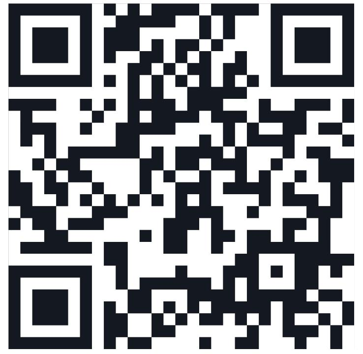

Panduan daftar akun Valetax, informasi jenis akun, copy trading, deposit, withdrawal, dan edukasi risiko trading untuk pengguna Indonesia.
Daftar Akun ValetaxValetax Indonesia Partner adalah halaman informasi untuk membantu pengguna Indonesia memahami proses pembukaan akun Valetax. Halaman ini berisi panduan dasar tentang pendaftaran akun, jenis akun, copy trading, deposit, withdrawal, dan hal penting yang perlu diperhatikan sebelum memulai aktivitas trading.
Informasi disusun agar pengguna dapat memahami langkah awal dengan lebih jelas. Pengguna dapat membaca panduan terlebih dahulu sebelum melanjutkan proses pendaftaran akun Valetax.
Untuk membuka akun Valetax, pengguna dapat masuk ke halaman pendaftaran melalui tombol di bawah. Pastikan data yang digunakan sudah benar, aktif, dan sesuai dengan identitas yang diminta pada proses registrasi.
Mulai Daftar SekarangScan QR untuk membuka halaman pendaftaran:

Halaman ini menyediakan beberapa informasi penting untuk membantu pengguna mengenal Valetax sebelum membuat akun dan menggunakan layanan trading.
Informasi dasar tentang proses pembukaan akun, data yang perlu disiapkan, dan langkah awal setelah akun berhasil dibuat.
Penjelasan tentang pilihan akun, spread, komisi, leverage, dan kebutuhan pengguna sesuai gaya trading masing-masing.
Informasi dasar tentang cara kerja copy trading, pemilihan trader, riwayat performa, dan risiko yang perlu dipahami.
Panduan umum tentang proses deposit dan withdrawal melalui sistem yang tersedia pada akun pengguna.
Copy trading adalah fitur yang memungkinkan pengguna mengikuti strategi dari trader tertentu. Fitur ini dapat membantu pengguna yang belum memiliki banyak waktu untuk menganalisis pasar secara mandiri.
Sebelum menggunakan copy trading, pengguna perlu melihat riwayat performa, risiko, drawdown, modal yang digunakan, dan konsistensi trader. Hasil masa lalu tidak menjamin hasil yang sama di masa depan.
Valetax memiliki pilihan akun yang dapat disesuaikan dengan kebutuhan pengguna. Setiap jenis akun dapat memiliki ketentuan berbeda, seperti spread, komisi, leverage, minimal deposit, dan instrumen trading yang tersedia.
Pengguna sebaiknya memilih akun sesuai kemampuan, pengalaman, modal, dan strategi trading yang digunakan. Pemilihan jenis akun perlu dilakukan dengan hati-hati karena setiap akun dapat memiliki karakteristik yang berbeda.
Deposit dan withdrawal perlu dilakukan melalui sistem yang tersedia pada akun. Sebelum melakukan transaksi, pastikan nama akun, metode pembayaran, nominal, dan data yang dimasukkan sudah benar.
Pengguna juga perlu memahami ketentuan proses dana, estimasi waktu, serta biaya yang mungkin berlaku sesuai kebijakan platform dan metode pembayaran yang dipilih.
Valetax Indonesia Partner adalah halaman informasi yang membantu pengguna Indonesia memahami proses daftar akun, jenis akun, copy trading, deposit, withdrawal, dan risiko trading.
Pengguna dapat membuka halaman pendaftaran melalui tombol yang tersedia, lalu mengikuti proses registrasi sesuai instruksi pada halaman tersebut.
Tidak. Copy trading tetap memiliki risiko. Performa masa lalu tidak menjamin hasil yang sama di masa depan.
Ya. Trading forex, emas, indeks, crypto CFD, dan instrumen derivatif memiliki risiko tinggi. Pengguna perlu memahami risiko sebelum membuka akun atau melakukan transaksi.
Trading forex, emas, indeks, crypto CFD, dan instrumen derivatif lain memiliki risiko tinggi. Nilai akun dapat naik dan turun dengan cepat. Keuntungan tidak dapat dijamin.
Gunakan dana yang siap untuk risiko. Pelajari manajemen risiko, ukuran lot, leverage, margin, dan kondisi pasar sebelum melakukan transaksi.
Pengguna yang sudah memahami informasi dasar dapat melanjutkan ke halaman pendaftaran akun Valetax melalui tombol di bawah.
Buka Halaman Pendaftaran